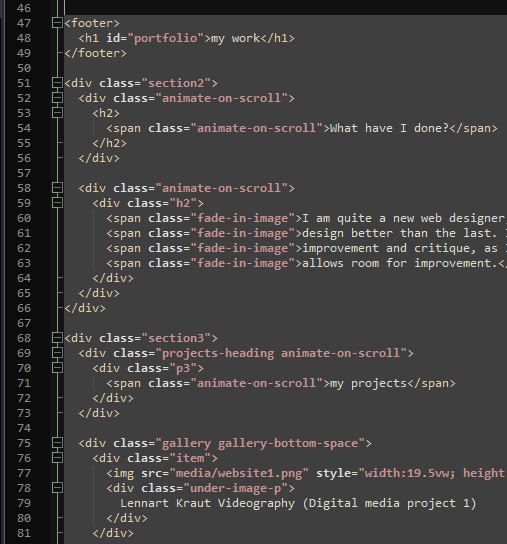
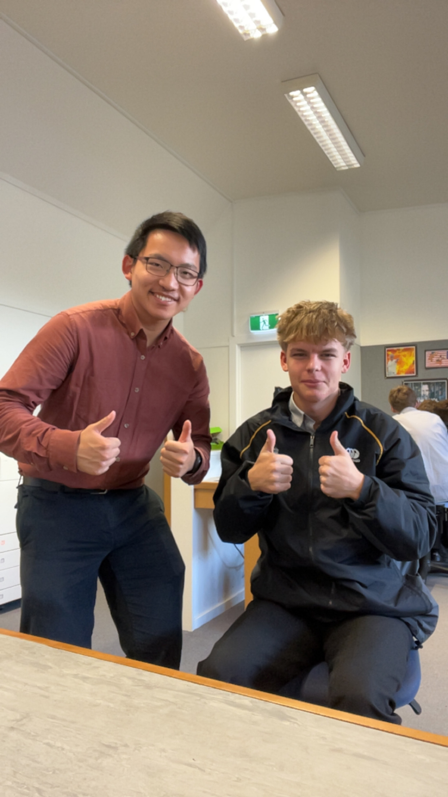
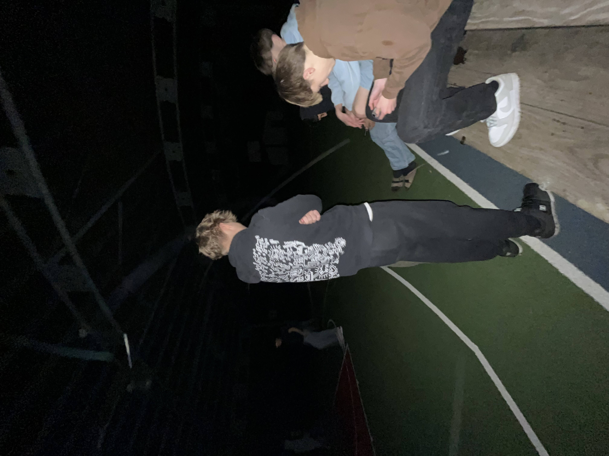

my projects (parallax gets messed up in screenshots)
Lennart Kraut Videography (Digital media project 1)

Magic the gathering (Concept website)

nixon-winger-web-development - portfolio - about - contacts - get-your-own-website - professional - joke-site - nixon-winger-web-development - portfolio - about - contacts - get-your-own-website - professional - joke-site -
nixon winger



Want a website?
Or reach me directly:
📧 Nixonwebdevelopment@gmail.com
📞 021 980 025
How I work